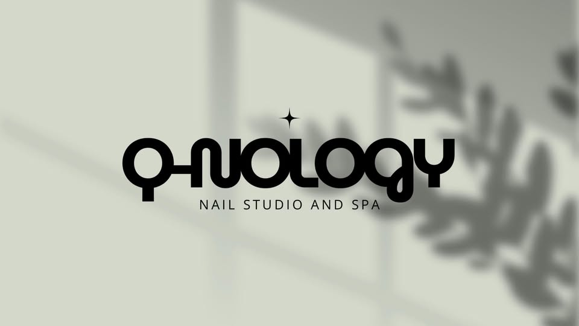
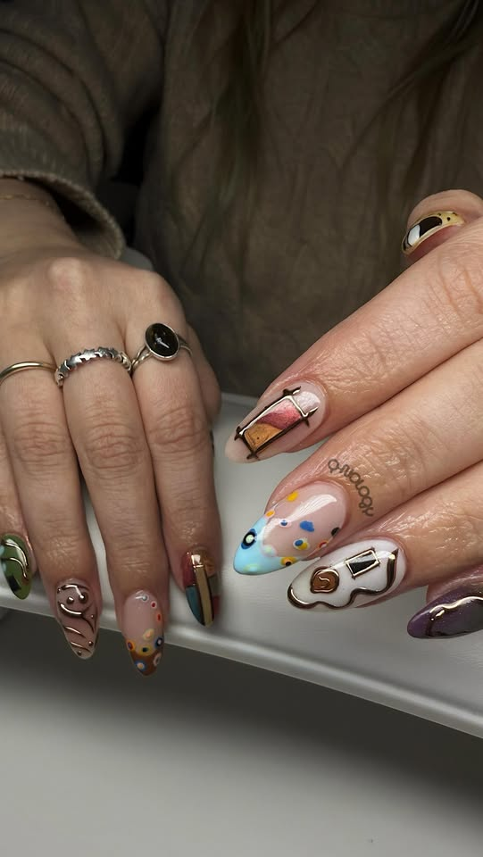
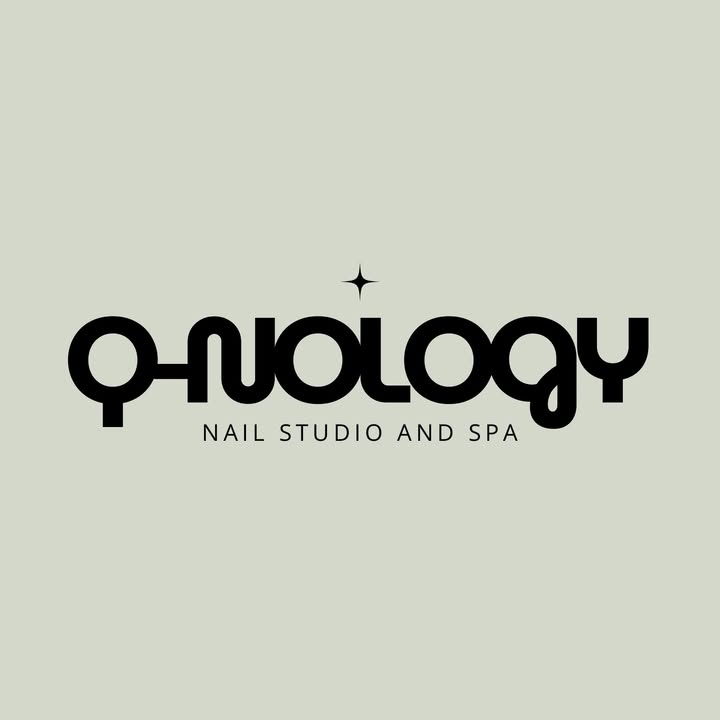
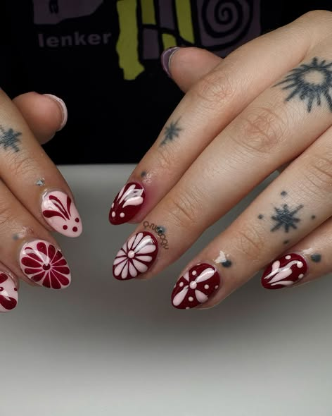
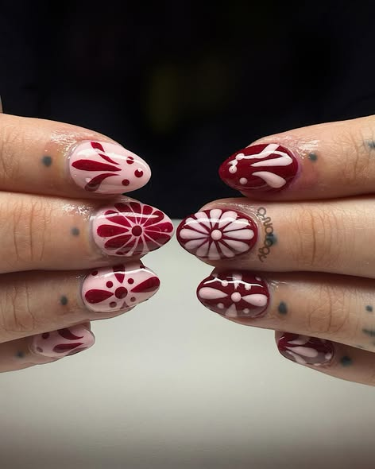
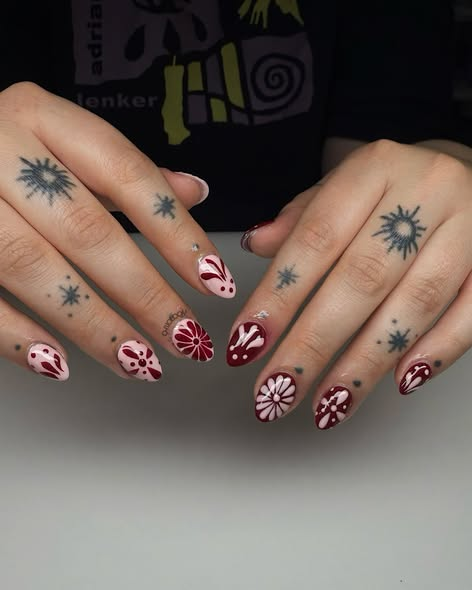

THE ARCHITECTURE
OF NAILS
Precision-engineered aesthetics for the clinical avant-garde. Where structural integrity meets artisanal pigment.

PRECISION MEETS PIGMENT
Anatomical Foundation
We do not simply apply color. We reconstruct the nail's architecture, ensuring structural strength through technical gel synthesis.
Clinical Purity
Our studio utilizes medical-grade sterilization protocols and pH-balanced chemicals designed for long-term nail health.
Artisan Rigor
Every stroke is a deliberate act of design. We treat the nail as a canvas for high-end technical mastery.
TECHNICAL TREATMENTS

Architectural Manicure
TECHNICAL FOCUS: SHAPE & CUTICLE

Structured Gel Synthesis
TECHNICAL FOCUS: APEX REINFORCEMENT

Artisan Lacquer
TECHNICAL FOCUS: CHROME & DEPTH

Pedicure Engineering
TECHNICAL FOCUS: DERMAL RESTORATION
Cary Street’s Premier Technical Studio
Located in the heart of Richmond, Q-NOLOGY is a specialized environment designed for the technical execution of luxury nail architecture. Our space is a hybrid of a design studio and a laboratory.
- HEPA-FILTERED VENTILATION
- AUTOCLAVE STERILIZATION
- ERGONOMIC STATIONS


FIND THE STUDIO
COORDINATES
2606 West Cary Street
Richmond, VA 23220
TELECOMM
(804) 928-0928
DIGITAL
Qnology25@gmail.com
Q-NOLOGY STUDIO HQ